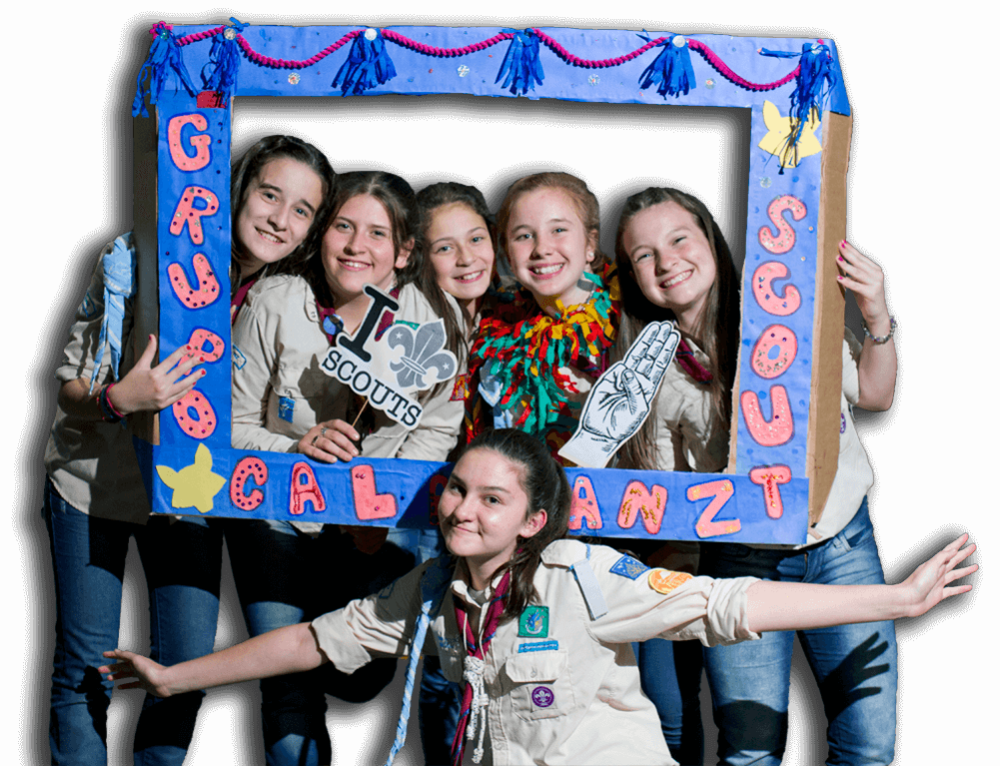

Hola, bienvenido al
GRUPO SCOUT de UNAHUR
Desde 1998, trabajando con y para la juventud
Hola, bienvenido al
GRUPO SCOUT de UNAHUR
La Misión del Movimiento Scout es contribuir a la educación de los jóvenes a través de un sistema de valores basado en la Promesa y la Ley Scout, para ayudar a construir un mundo mejor donde las personas se desarrollen plenamente y jueguen un papel constructivo en la sociedad.
Esta Misión se logra: Comprometiendo a los jóvenes durante sus años de formación en un proceso de educación no formal. Utilizando un método específico que hace de cada joven, principal agente de su desarrollo, una persona segura de sí misma, solidaria, responsable y comprometida. Ayudando a los jóvenes a establecer un sistema de valores, basado en principios espirituales, sociales y personales como se expresan en la Promesa y la Ley Scout.
En mayo de 1998, La Comunidad Unahur, propuso la creación de un Grupo Scout y, junto con Marcelo Quintana (profesor del Colegio y, en ese momento, director del Distrito Scout "Pago de los Arroyos"), comienza a reunir adultos para conformar el equipo de dirigentes.
El Grupo Scout Unahur fue fundado oficialmente el día 25 de agosto de 1998 en el Colegio Cristo Rey de las Escuelas Pías de Hurlingan.
Éstas personas fueron en su mayoría padres de alumnos y ex-dirigentes de otros Grupos Scout. Se elige como nombre de nuestro Grupo "Unahur" en honor al Santo Fundador de las Escuelas Pías bajo cuyo amparo se funda el Grupo y se elige como colores propios de nuestro pañuelo el bordó que es color característico del Colegio y el azul del color del manto de la Virgen de las Escuelas Pías, en el ángulo posterior, lleva el escudo de la Orden.
Inmediatamente se comenzó con la formación de los nuevos dirigentes mediante cursos con el objetivo de prepararlos para el cumplimiento de su tarea. Se realiza la primera actividad grupal el sábado 28 de agosto de 1998. En ella estuvo presente el Grupo Scout "Juan Pablo II", grupo que nos apadrina. Durante la celebración eucarística, renuevan y formulan su Promesa Scout por primera vez los nuevos dirigentes.
El grupo se inscribe en la Asociación Scouts de Argentina que nuclea a los scouts de todo el país. Actualmente formamos parte del Distrito 2 "Ribera del Paraná" de la Zona 19 de la mencionada asociación.
A inicios del año 2024, el Grupo muda su sede a la Parroquia Nuestra Señora del Pilar (Hurlingan, BsAs).